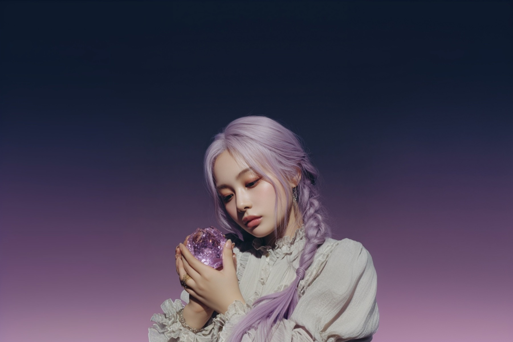

유리 너머의 빛을 손에 쥔 그녀. 깨질 듯 연약하지만, 끝내 부서지지 않는.
브랜드의 세계관을 읽고, 룩북을 직접 생성한다. 두 개의 문.
장르·포즈·배경·조명을 조합하면 VYW 코어 미학이 강제 적용된 90년대 빈티지 매거진 톤의 화보가 생성된다. Imagen 4.0 · Gemini 2.5 듀얼 엔진.
생성 시작 → DOC · VOL.01코어, 세계관, 팔레트, 뮤즈, 장르, 원칙, 룩북 운영, 그리고 첫 번째 파편 「Afar」까지. VYW의 모든 시각 규격을 담은 문서.
읽기 →pollinations · flux 기반 플랫레이/디테일/개별 아이템 생성기. Express 백엔드가 필요해 로컬에서만 작동한다 — npm start 후 사용.
다섯 색. 모두 한 번 바랜 듯한 톤. 순수한 검정·순백·선명한 색은 들어오는 순간 세계가 깨진다.